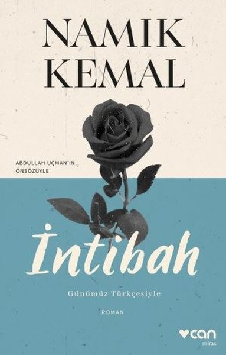

İntibah
Yazarı : Namık Kemal
Türü : Roman, Kurgu
Sayfa sayısı : 174
İntibah romanı, bilindiği üzere Namık Kemal’in en ünlü eserlerindendir. Sadece bununla kalmayıp ilk Türkçe romanlardan da biridir ve asıl adı Mehmet Kemal olan bu yazar tarafından 1870’li yıllarda yazılmıştır. Romanın birinci bölümü Çamlıca’nın ilkbahardaki güzelliğinin anlatımından oluşur. Bu bölümde bolca betimleme kullanan yazar, bölümün sonunda tarifin güzelliğine kendini kaptırdığını söyler ve özür diler. Fakat buna rağmen ikinci bölümde de aynı şekilde Çamlıca’ya olan hayranlığından bahseder ve üçüncü bölümde ise romanın ana karakterlerinden biri olan Ali Bey’i tanıtmaya başlar.
Ali Bey yirmili yaşlarının başında, zengin bir ailenin çocuğudur. Babası çocuk sevgisine çok önem verir ve Ali ile de bolca ilgilenmiştir. Ali Bey; babasının sevecen, yumuşak ve şefkatli halinin yanı sıra sinirli, aşırı derecede hırslı ve tutkuludur. Yalnız, Ali Bey’in bir olumlu yönü vardır ki: derslerine çok önem vermektedir. Tüm dünyasını derslerinin üzerine kurmuştur. Bir fedakârlık yapacaksa bu, pahalı bir kitap almak olabilir. Ya da ağlarsa okuduğu kitapta zor bir olayı çözemediği için ağlar. Babası ise Ali Bey yirmi yaşındayken vefat eder. Babasının ölümünden sonra Ali Bey çok üzülür, çok etkilenir. Günlerce evden çıkmaz, tamamen içine kapanmıştır. Eskiye yönelik birçok özelliğini kaybetmiştir. Annesi oğlunun bu durumuna çok üzülür. Onu eski haline döndürmek için canını vermeye hazırdır. Zavallı kadın çareler ararken en sonunda oğlunu zorla da olsa dışarı çıkarıp gezdirmeye ikna eder. Hemen her gün zor da olsa bunu yapar ve gün geçtikte Ali Bey’in dışarı çıkmamak için ettiği inat azalır. Gün gelir, artık eski sosyalliğine kavuşmaya başlar, çalıştığı kaleme gidip arkadaşlarıyla zaman geçirir.
Bir gün arkadaşlarıyla bir buluşma düzenlemeye karar verirler. Buluşma yeri için de Çamlıca’yı seçerler. Gittikleri cadde kalabalıktır ve bu caddedeki erkeklerin geneli kendilerince eğlenmek için yalan da olsa tanımadıkları bayanlara karşı onu çok sevdiklerini, aşklarından öleceklerini söylerler. Bunların arasında Ali Bey’in arkadaşları da vardır fakat Ali Bey durumdan hoşnut değildir. Bir köşede oturup onları izlerken ortama ayak uydurması gerektiğini düşünür. Babasının verdiği terbiyeye ve isteklerine uygun olmasa da bir arabaya doğru bu amaçla yaklaşır. Fakat arabanın perdesi hafif aralanarak Ali Bey’in bilmediği bir işaret yapılır ve perde kapatılır. İrkilen Ali Bey, anlamını bilmediği bu işaretin arkadaşlarından “Etrafta yabancılar azalmadan konuşmamız mümkün değildir” anlamına geldiğini öğrenir. Kendini çarpılmış gibi hisseder. Günlerce arabanın içindeki bu namuslu bayanı düşünür ve hayal eder. En sonunda o bayanı bulabilmek için tekrar Çamlıca’ya gitme kararı alır. Gittiğinde ise arzu ettiği kadının arabası oradadır. Kadın arabadan indiğinde Ali Bey donakalır, konuşamaz. En sonunda dayanamayan kadın ilk konuşmayı kendisi yapar. Kadının adı Mahpeyker’dir. Mahpeyker yalancı, sahte ve oyunculara taş çıkaracak cinsten oyuncudur. Ali Bey, kötü bir bayanla izdivaç kurmak üzere olduklarının farkında değildir.
Mahpeyker ise Ali Bey’in evden kovduğu Dilaşub’u evine hizmetçi olarak almıştır ve gencecik kıza çeşitli işkenceler etmektedir. Hala Ali Bey’i geri kazanamayan Mahpeyker kötü planlarına devam eder ve en az kendisi kadar kötü olan bir arkadaşının tavsiyesini dinleyerek Ali Bey’i öldürmeye karar verirler. Hazır öldürmüşken Dilaşub’a da sevdiği adamın kanlı cesedini gösterip acı çektirmeye karar verirler ve planın uygulanacağı yere Dilaşub’u da götürürler. Dilaşub ise Mahpeyker ile anlaşma yapan katil arasında geçen konuşmayı gizlice dinler. Amaçlarının Ali Bey’i öldürmek olduğunu öğrenince buna razı gelmez ve Ali Bey’in yerine geçer. Anlaşma yapılan katil Dilaşub’u Ali Bey sanarak sırtından vurur ve öldürür. Buna şahit olan Ali Bey ise hemen ardından Mahpeyker’i öldürür ve hapse atılır. Kendisi de hapiste bir müddet zaman geçirdikten sonra vefat eder.